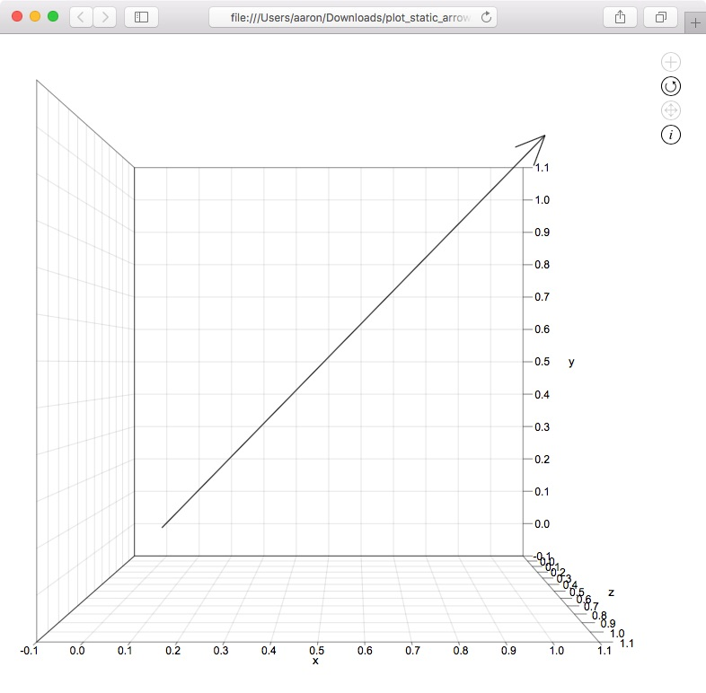
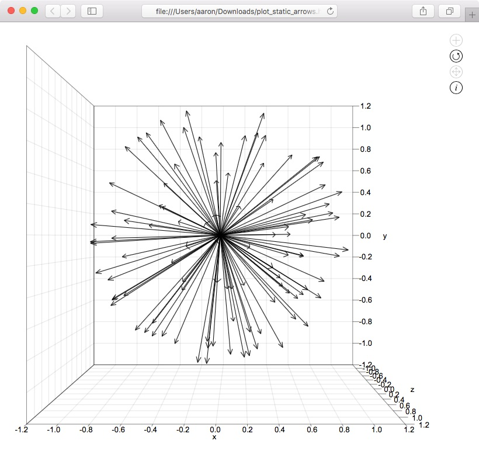

Plotting 3D arrows
This tutorial will show you how to plot static and animated 3D arrows using the R package svgViewR. The uninterrupted block of code can be found at the end of this tutorial.
Preliminary steps
Make sure that you have R installed on your system (you can find R installation instructions here).You will also need to install the latest version of the R package svgViewR on CRAN.
# Install the svgViewR package (if not already installed) install.packages('svgViewR', dependencies=TRUE)
Creating an arrow
Start by loading the svgViewR package into the current R workspace.
# Load the svgViewR package library(svgViewR)
Create a single arrow. This is specified as a matrix with the first and second row of the matrix corresponding to the base and tip of the arrow, respectively.
## Create arrow of length 1 arrow <- rbind(rep(0,3), rep(1,3)) arrow [,1] [,2] [,3] [1,] 0 0 0 [2,] 1 1 1
Then open a connection to a new svgViewR .html file. All of the shapes that you draw will be written to this .html file. At the end you'll be able to open this file in a web browser and view the shapes as an interactive visualization. All of the needed code is contained within this html file which will allow you to share this file so others can view the visualization (they do not even need to have R installed to view it).
# Open a connection to .html file svg.new(file='plot_static_arrow.html')
Add the arrow to the plot.
# Add arrow svg.arrows(arrow)
Optionally, add a frame around the arrow. This function outputs the limits of the drawn frame. To surpress this output from being written to the console send the function's output to svg_frame.
# Add coordinate axis planes around the arrow svg_frame <- svg.frame(arrow)
Close the connection to the .html file. This adds some closing tags that are needed for the visualization to work properly.
# Close the file connection svg.close()
You can open the resulting .html file.
Note that unlike the base R plotting functions you are not required to specify limits for the plot region prior to plotting shapes. When you open the .html file the javascript code inside the .html file will automatically determine the necessary viewing window dimensions so that all the shapes are visible.
To rotate the graphic click and drag the cursor while holding down the 'r' key or click on the circle arrow icon in the top right corner and then click and drag the cursor. To move the graphic click and drag the cursor or click on the intersecting arrows icon in the top right and click and drag the cursor. To zoom scroll in and out. To return to the initial orientation of the graphic (or to see changes if you re-write the file) refresh the browser.
Creating an animated arrow
To animate this arrow you just need to convert the matrix into an array, similar to animating 3D points. However, one difference between the svg.points function and the svg.arrows function is that and the svg.points can plot multiple static or animated points while svg.arrows can only plot a single static or animated arrow.
Set the number of iterations you'd like.
## Set number of iterations n_iter <- 100
Create an array of the arrow at each iteration.
# Animate arrows, save into array arrow_anim <- array(arrow, dim=c(dim(arrow), n_iter)) for(iter in 0:(n_iter-1)){ # Translate along vector direction tm <- matrix(0.1*iter*(arrow[2,]-arrow[1,]), 2, 3, byrow=TRUE) # Apply translation arrow_anim[, , iter] <- arrow + tm }
This array is a series of 2-row matrices specifying the start and end of the arrow at each interval.
arrow_anim[,,1] [,1] [,2] [,3] [1,] 0.1 0.1 0.1 [2,] 1.1 1.1 1.1
Start a new plot file and add the animated arrow to the plot. Optionally, add a frame around the animated arrow. Use the len parameter to set the arrowhead length since the default is not the right size.
# Open a connection to .html file svg.new(file='plot_animated_arrow.html') # Plot arrows, set arrowhead length svg.arrows(arrow_anim, len=0.5) # Add coordinate axis planes around the points svg_frame <- svg.frame(arrow_anim) # Close the file connection svg.close()
You can open the resulting .html file.
Creating multiple arrows
To create multiple arrows you'll have to call svg.arrows for each arrow. Set the number of arrows you'd like to draw.
## Set number of arrows n_arrows <- 100
Use a normal distribution to set randomly oriented arrows radiating from the origin.
# Create randomly oriented arrows arrowm <- list() for(i in 1:n_arrows) arrowm[[i]] <- rbind(rep(0,3), uvector_svg(rnorm(3)))
Optionally, if you'd like to draw a coordinate frame around the arrows, get the xyz-coordinate ranges.
# Get range arrow_range <- apply(matrix(unlist(arrowm), ncol=3, byrow=TRUE), 2, 'range', na.rm=TRUE)
Start a new plot file and add each arrow to the plot, optionally adding a frame around the arrows.
# Open a connection to .html file svg.new(file='plot_static_arrows.html') # Plot arrows for(i in 1:n_arrows) svg.arrows(arrowm[[i]]) # Add coordinate axis planes around the points svg_frame <- svg.frame(arrow_range) # Close the file connection svg.close()
You can open the resulting .html file.
Creating multiple animated arrows
To demonstrate how to plot multiple moving arrows we'll animate the randomly oriented arrows so that they "shoot" outward from the origin.
Create a list of arrows, with each list element as an array of arrow start and end coordinates at each iteration. In the previous example (multiple static arrows) each list element was a matrix so we're effectively converting each "arrow matrix" into an "arrow array".
## Animate arrows arrowm_anim <- list() for(i in 1:length(arrowm)){ # Create array arrowm_anim[[i]] <- array(NA, dim=c(dim(arrowm[[i]]), n_iter)) # Apply transformation at each iteration for(iter in 0:(n_iter-1)){ # Translate along vector direction (outward from the origin) tm <- matrix(0.05*iter*(arrowm[[i]][2,]-arrowm[[i]][1,]), 2, 3, byrow=TRUE) # Apply translation arrowm_anim[[i]][, , iter] <- arrowm[[i]] + tm } }
At each iteration, each arrow is translated outward from the origin along its orientation. The translation distance is based on the current iteration number.
To draw a coordinate frame around the arrows get the xyz-coordinate ranges.
# Get range arrow_range <- apply(matrix(unlist(arrowm_anim), ncol=3, byrow=TRUE), 2, 'range', na.rm=TRUE)
Start a new plot file and add each animated arrow, optionally adding a frame around the arrows. Use the len parameter to set the arrowhead length since the default is not the right size.
# Open a connection to .html file svg.new(file='plot_animated_arrows.html') # Plot arrows for(i in 1:length(arrowm_anim)) svg.arrows(arrowm_anim[[i]], len=0.3) # Add coordinate axis planes around the points svg_frame <- svg.frame(arrow_range) # Close the file connection svg.close()
You can open the resulting .html file.
Uninterrupted code
# Load the svgViewR package library(svgViewR) ## Create arrow of length 1 arrow <- rbind(rep(0,3), rep(1,3)) arrow [,1] [,2] [,3] [1,] 0 0 0 [2,] 1 1 1 # Open a connection to .html file svg.new(file='plot_static_arrow.html') # Add arrow svg.arrows(arrow) # Add coordinate axis planes around the arrow svg_frame <- svg.frame(arrow) # Close the file connection svg.close() ## Set number of iterations n_iter <- 100 # Animate arrows, save into array arrow_anim <- array(arrow, dim=c(dim(arrow), n_iter)) for(iter in 0:(n_iter-1)){ # Translate along vector direction tm <- matrix(0.1*iter*(arrow[2,]-arrow[1,]), 2, 3, byrow=TRUE) # Apply translation arrow_anim[, , iter] <- arrow + tm } arrow_anim[,,1] [,1] [,2] [,3] [1,] 0.1 0.1 0.1 [2,] 1.1 1.1 1.1 # Open a connection to .html file svg.new(file='plot_animated_arrow.html') # Plot arrows, set arrowhead length svg.arrows(arrow_anim, len=0.5) # Add coordinate axis planes around the points svg_frame <- svg.frame(arrow_anim) # Close the file connection svg.close() ## Set number of arrows n_arrows <- 100 # Create randomly oriented arrows arrowm <- list() for(i in 1:n_arrows) arrowm[[i]] <- rbind(rep(0,3), uvector_svg(rnorm(3))) # Get range arrow_range <- apply(matrix(unlist(arrowm), ncol=3, byrow=TRUE), 2, 'range', na.rm=TRUE) # Open a connection to .html file svg.new(file='plot_static_arrows.html') # Plot arrows for(i in 1:n_arrows) svg.arrows(arrowm[[i]]) # Add coordinate axis planes around the points svg_frame <- svg.frame(arrow_range) # Close the file connection svg.close() ## Animate arrows arrowm_anim <- list() for(i in 1:length(arrowm)){ # Create array arrowm_anim[[i]] <- array(NA, dim=c(dim(arrowm[[i]]), n_iter)) # Apply transformation at each iteration for(iter in 0:(n_iter-1)){ # Translate along vector direction (outward from the origin) tm <- matrix(0.05*iter*(arrowm[[i]][2,]-arrowm[[i]][1,]), 2, 3, byrow=TRUE) # Apply translation arrowm_anim[[i]][, , iter] <- arrowm[[i]] + tm } } # Get range arrow_range <- apply(matrix(unlist(arrowm_anim), ncol=3, byrow=TRUE), 2, 'range', na.rm=TRUE) # Open a connection to .html file svg.new(file='plot_animated_arrows.html') # Plot arrows for(i in 1:length(arrowm_anim)) svg.arrows(arrowm_anim[[i]], len=0.3) # Add coordinate axis planes around the points svg_frame <- svg.frame(arrow_range) # Close the file connection svg.close()